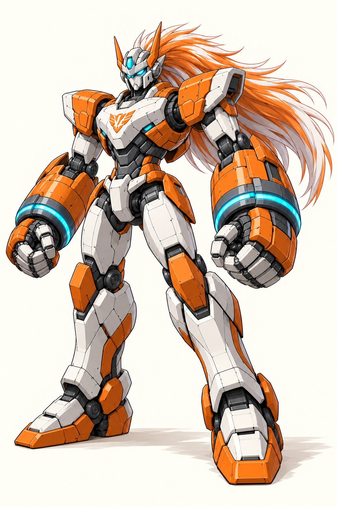
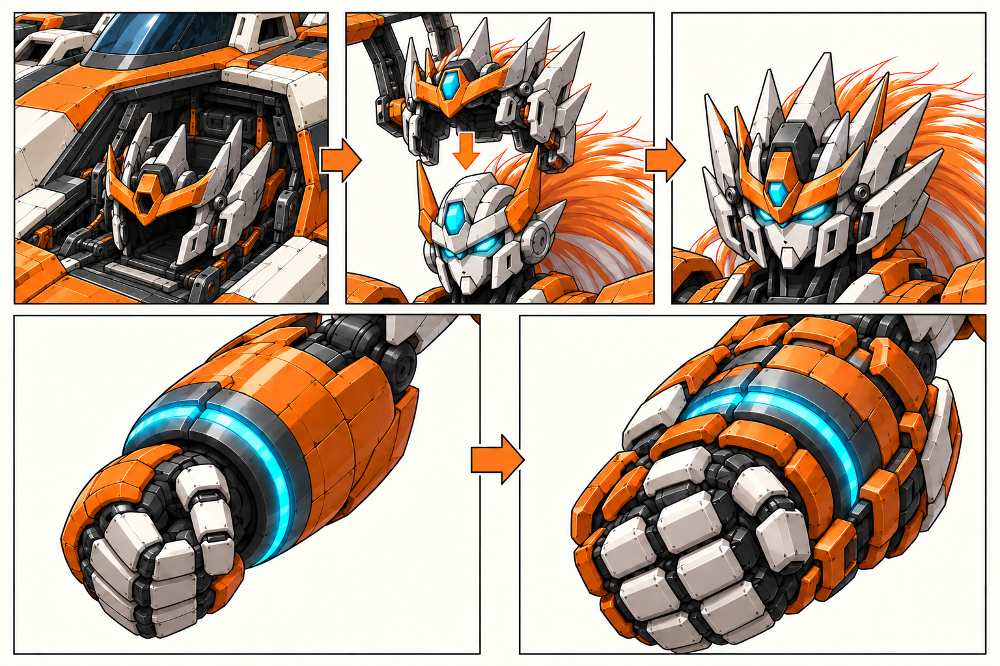
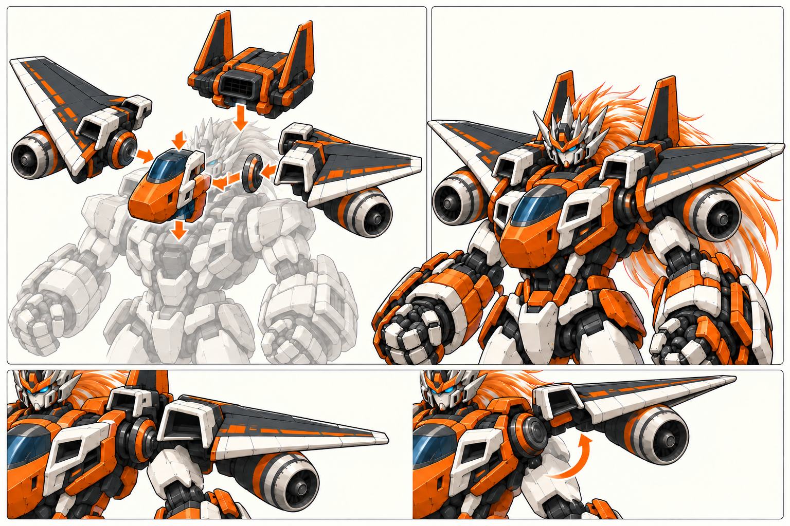

看到的差异：图9装好后额前出现青色宝石；图10整机额部是橙色竖片/石墨底。图8左上灰色核心又已戴合体头冠，与图9后加载的过程冲突。
具体处理：以图10作为合体头终态，图6/11作为原头；图9只校正外面罩额部，图8灰色核心恢复原头。保留长发和原头本体，不改成换整颗头，也不解释为核心自己长出新冠。
保留图9的机身内收纳→加载→装好机制与图8翼架让位。
超 GAG · 社勇王 / 勇拳 · 2026.10.18 R11
你本次选定的 11 张原图收为同一套设计基准。整机头身比、巨拳、轰炸机框架、长发、列车臂壳和履带腿沿用；本轮只核对微调与同一部件在不同图中的对应。
结论：造型方向成立。需要局部改图的有头部状态、发动机尾端和侧胸机鼻；需要补清的是背包、列车臂壳两态、钻机到腿足的归属。胸标及材质在制作时归一。
圈号对应下方评审项。原图文件全部保留，本页仅叠加评审标记；本轮没有重新生成或暗换图。
图10负责整机终态，图11负责勇拳主体，图6核对原核心三视；图7/8/9负责过程，最终外形向整机对齐。
保持高身材与巨拳的重量，不把肩翼改薄，不为解释分件另画一副腿。图1、2的局部问题向同一套整机对齐。

最终整体比例、巨拳、胸机鼻、头冠、主翼、膝钻及腿足外观的首要基准。

肩甲侧向造型、发动机轴向、腿前后履带与足跟。

中置上下双格栅背包、双竖翼、后腿橙脊板与后跟。
图11定主体、图6核对正侧背。图9的来源和装载方式保留；额部终态只需向图10统一。拳甲继续强化，列车臂壳不替代巨拳。

完整核心的主要造型与色块；胸口标识仍需和图6统一。

同一个完整人形核心的正侧背、原头和长发、原四肢与关节。

轰炸机内置面罩加载到原头；拳甲强化属于完整核心。
图3固定单体造型，图8固定分件和肩部让位思路。双竖翼、肩甲斜三角体积、进气朝前的轴向保留。

完整机鼻/舱窗、双主翼、双发动机、两片竖翼与独立翼根。

胸/背/翼架独立分件，翼架与核心肩关节分别活动。
图4固定车型；图7负责开壳。图10的待机轮廓继续保留，用同一套壳体的两个状态连起来，不做两辆不同车型。

一列两节、两个外端车头、中央联接、橙白蓝窗带与短翼。

中缝拆节、左右开壳、车头朝肘后、拳向前的状态关系。
图5固定单体，图10固定腿长和安装形状，图1、2补侧后。接下来只补一张部件归属示意，防止又从载具推导出不同的长腿。

一车双模块、双钻、每半分组履带和白甲/橙架。
以下结论来自作者实际查看这11张图。已经看见的差异与尚未交代的对应关系分开；没有把正常遮挡、透视或发光状态一律判错。
局部修图
看到的差异：图9装好后额前出现青色宝石；图10整机额部是橙色竖片/石墨底。图8左上灰色核心又已戴合体头冠，与图9后加载的过程冲突。
具体处理：以图10作为合体头终态，图6/11作为原头；图9只校正外面罩额部，图8灰色核心恢复原头。保留长发和原头本体，不改成换整颗头，也不解释为核心自己长出新冠。
保留图9的机身内收纳→加载→装好机制与图8翼架让位。
看到的差异：图2背向的翼下两台发动机仍能读到进气风扇/轮毂；图1、3、10已经规定进气端朝前。
具体处理：仅修改图2翼下两处后端开口：无进气风扇，改为凹入深色排气喷口/分瓣尾圈。保持发动机筒长、肩甲斜三角体积、翼根与背包位置。
不重新解释图1肩甲，不把选定侧肩压成薄平翼条。
看到的差异：图1侧胸机鼻仍读成偏尖长的下探前端；图3、10是更饱满的短钝机鼻。图8细部也需随主稿核对。
具体处理：以图3机鼻立体形与图10胸部安装外观为准，侧面收尖、收短，保留橙色端面/象牙白颊框与蓝黑舱窗。只改鼻端，不重造肩胸框架。
侧向纵深可以比正面显著；不因正常透视差异横向挤压整张图。
补清部件对应
看到的差异：图2明确上下两处矩形格栅；图3和图8独立背包部件只清楚交代一处。由现有角度不能断言另一口不存在，但来源尚未说明。
具体处理：背包终态沿图2。补一张后下侧小示意，说明第二格栅随哪片机身翻到背部；图8分件补齐双口和同一壳体边界。无需为此改整架飞机轮廓。
双竖翼和中置背包的总体位置不改；无需工程级精密变形。
看到的差异：图7是大幅开壳的安装/炮击状态；图1、2、10主要看到收拢的列车外侧壳。它们可解释成同一结构的两个状态，不能只凭外观差异判成不同车型。短翼和底盘件在展开态的去向未交代。
具体处理：固定待机收拢/炮击展开两态：一节对应一臂，两半壳左右打开，车头永远退向肘后，中间连接端朝拳前；短翼贴壳折收。用一次侧向开合说明炮口和核心前臂的位置，不缩小或遮掉巨拳。
保留图4车型、图7开壳方向与图10整机待机轮廓。
看到的差异：图5每个半车体有分组履带、座舱窗面和分段白壳；图1/2/10规定了膝钻、胫甲、踝及脚掌，但原有图未清楚交代这些载具部件分别归到哪里。不能因画法相似就宣布变形闭合。
具体处理：安装后形态以图10为首要比例依据、图1/2补侧后。只补同色编号分件示意：左右半车各进一腿，膝钻、胫前白甲、前后带面、踝足/后跟分别标清；座舱窗面折入内后侧。履带分组的具体分配在这张示意中核对，不另生一副长腿。
不采用R9长小腿。R10细图未包含在本次11张选择中，保留作补充候选，不自行替换图10。无需连续真实机械折变模拟。
制作时归一
看到的差异：图11有橙色胸标，图6三视留白。主体结构与形象并无因此冲突。
具体处理：建议制作母版暂按图6胸前留白，图11继续负责主体造型；若需要标记，另用项目原创标志，作为可换贴花，不重画胸甲。
本条是作者建议，用户本次选定图11并未单独否定或批准胸标的最终版本。
看到的差异：图6/9/11腕环明显，图10合体后不明显；可由外甲遮挡或发光状态解释，不能据此擅自给整机补满亮蓝光条。各图的橙白石墨已属同一家族。
具体处理：腕环绑定同一腕部结构；合体后允许外甲遮住，只露局部窄缝，动作时再增强。统一象牙白、主橙、石墨、金属与玻璃的材质来源，保留轰炸机偏石墨、列车偏白、钻机橙白的色块分工。
不把所有机组洗成相同橙灰比例；不改已选的英雄色和重拳轮廓。
修订次序：先局部修头部状态、发动机尾口和胸鼻；再用小示意补双口背包、臂壳两态和钻机分件归属。只处理这些明确部位，不重新生成整机方案。
不用制作精密机械折变或逐对碰撞参数；可见部件的数量、朝向、比例与归属必须自洽，随后由事件驱动各组件切换状态。
| 附件 | 用途 | 本次采用范围 |
|---|---|---|
| 1 | 社勇王侧面 | 肩甲侧向造型、发动机轴向、腿前后履带与足跟 |
| 2 | 社勇王背面 | 中置上下双格栅背包、双竖翼、后腿橙脊板与后跟 |
| 3 | 轰炸机单体 | 完整机鼻/舱窗、双主翼、双发动机、两片竖翼与独立翼根 |
| 4 | 海底列车单体 | 一列两节、两个外端车头、中央联接、橙白蓝窗带与短翼 |
| 5 | 钻探机单体 | 一车双模块、双钻、每半分组履带和白甲/橙架 |
| 6 | 勇拳三视设计 | 同一个完整人形核心的正侧背、原头和长发、原四肢与关节 |
| 7 | 列车臂壳展开 | 中缝拆节、左右开壳、车头朝肘后、拳向前的状态关系 |
| 8 | 轰炸机装配与肩翼让位 | 胸/背/翼架独立分件，翼架与核心肩关节分别活动 |
| 9 | 面罩加载与拳甲强化 | 轰炸机内置面罩加载到原头；拳甲强化属于完整核心 |
| 10 | 社勇王整机正面 | 最终整体比例、巨拳、胸机鼻、头冠、主翼、膝钻及腿足外观的首要基准 |
| 11 | 勇拳单体形象 | 完整核心的主要造型与色块；胸口标识仍需和图6统一 |
本次选择确立整体设计基准，不把尚未画出的局部修订、精确模型、动画或运行验收写成完成。
R9长腿稿仍停用。R10腿部细图未包含在你本次列出的11张中，保留作补充候选，不自行替换图10。